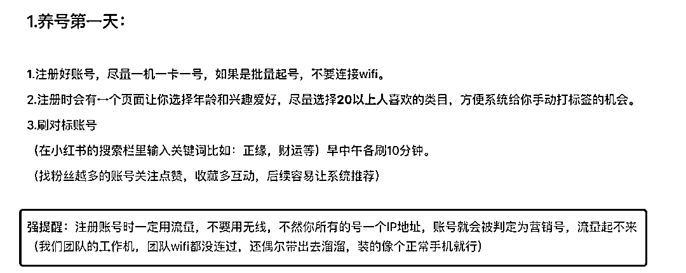
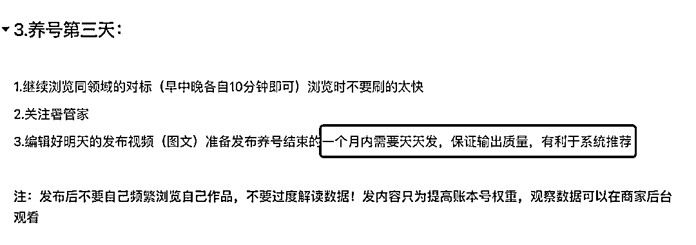
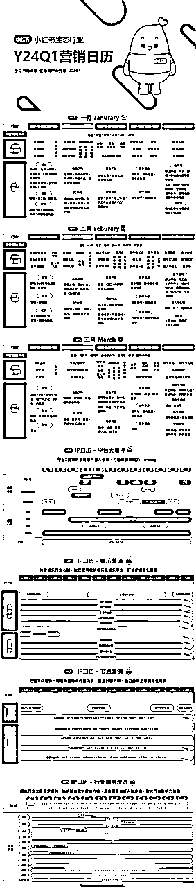
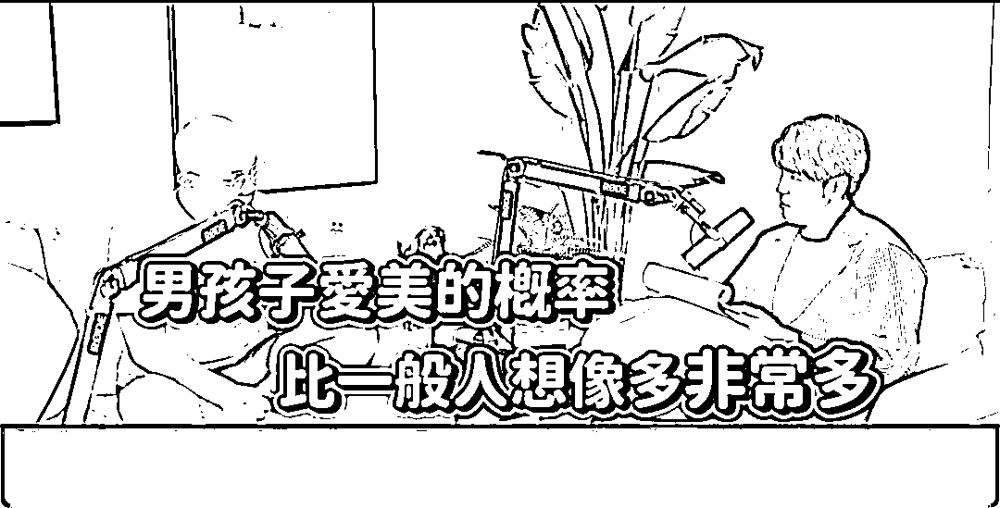

来源：https://qnfoes1o78.feishu.cn/docx/DqqBdmi6RoBjynxX7UfcJlaCn3c
花了3个小时，仔细看完YouTube上 前小红书演算法工程师的访谈，
得出一些比较有价值的观点，分享给大家，
A1：用的时间久了，会发现，朋友刚说完某个产品、某个品牌，你转头打开小红书就刷到了。
或者通过小红书能刷到前男友的现女友，前女友的现男友，
这种情况非常多。。。
如何做到的？
一个词概括：物以类聚人以群分。
通过人际关系链。
例如，好友点赞过的，推送给你，大概率也是你感兴趣的笔记。
再有一点：IP地址，
一个局域网，连上WiFi，出去的IP都是同一个。
ABC点赞评论的内容，更精准击中EFG用户。
更容易出现在你们的讨论范围之内。
延展（IP观点包括但不限于小红书）：
---去饭店，连上WiFi，也是透露你的消费层次。
---IP地址，关联你的活动范围。
把所有去过的地方串起来，了解你是一个怎样的人。
去什么饭店、银行、酒吧、理发店、万象城、等等等等
从算法的角度来说，了解一个用户太简单了，你是一览无余。
甚至，
系统，比你，更了解你自己。
通过手机型号来进行区分。
手机型号、IP地址，都会泄露你的一举一动。
知道你的喜好偏向、你的活动范围、你的消费层级。
价值3000的护肤品套装，投流推送给手机设备3000元以下的，还是8000元以上的？
大家懂的都懂。
正好刷到一些关于小红书养号的经验，
1、注册号千万不要用WiFi，跟我上文讲的一样，

2、从一个WiFi出去就是同一个IP地址，数量多的话，必被盯上。

平台当然要奖励、天天发布的创作者，
或者说，区别对待日更和月更的账号。
A：先了解算法如何帮助平台赚钱。
演算法做的就是，让用户刷更多，让用户明天还会来，
让用户点广告，买东西，去消费，周而复始，才能更多帮助平台赚钱。
所以，演算法做的，是如何留存住更多的用户？
做法是，将用户分组，AB testing，不同人吃不同药，不同群体推不同内容，
这就导致，我们刷到的内容，是不一样的，是不是很像淘宝的千人千面！
每个创作者和用户，都是产生数据的工具，
用户留存指标，看了哪些内容，有过多少互动，明天大概率还是会来的。
用户一举一动，都会被记录加以分析。
A：答案是不会。
演算法，也是反应用户偏好。
所以这个问题，核心是，获取用户偏好。
专业的创作者，会准备3-6个版本笔记、视频，如果反馈不好，下架，上下一个。
这是Trial&Error试错的过程。
有时候，创作的内容，击中某些关键词，可以过审，但就是没有流量。
算法工程师都说，这是个玄学，无法解释。
所以，只能一直尝试，提高爆文的概率，提高账号活跃度，
专业的人，能做的，提高这个概率，所以会有testing，就是一个过程。
A：非常多非常多。
页面留存时间、页面滑动次数，
页面、视线停留时间、
通过处于正中间的图片时长来判断，因为不喜欢的图就直接刷掉。
视频检测完播率。
可以说，每分每秒都在监控用户的偏好。
A：老板可以决定，这个很正常。
举例说明，内容有分很多不同的类别，想要做某一类新内容时候，那流量就会比较高。
对于工程师来说，可以去修改模型，也就是人工可以干预、辅助流量趋势。
看老板需求是什么，点赞高的内容？创作者的活跃度？都是可以通过模型来调整。
某些头部流量太好要翻身？那就给他压一压，不会让头部有太高话语权。
跟着平台的趋势去走的话，流量会更好一些。如下↓

跟着营销节点，布局关键词或品类词，更好获取流量。
A：有团队KPI是创作者的发文指标。
那么，问题是，如何让创作者发文积极？
对于新用户而言，刚来的时候流量高一些，点赞多一些、留言互动多一些。
但是，这些数据是真是假？
WHO KNOWS？
WHO KNOWS？
WHO KNOWS？
为了提高用户粘度，平台可能会给你一些数据的错觉。
系统什么时候给你推送、什么时候给你流量，都是设计好的，在这种大环境下，创作者是非常焦虑的。
但对平台来说，就是要让你焦虑，焦虑才会有产出。
如果一阵子不发文，会被打压，因为，平台要鼓励每天发文的创作者。
创作分、频道分，都是不同维度的指标。
每个创作者和用户，都是产生数据的工具，
平台当然要奖励、天天发布的创作者，
或者说，区别对待日更和月更的账号。
一开始10like给你发推送，后来阈值越来越高，可能0点之后才会有新的点赞、评论推送进来，
（恍然大悟，之前我还以为是手机的问题）
思考：第一性原理思考，为什么做数据？
提高笔记互动→提高笔记整体曝光度→提高店铺销量→赚钱/涨粉/卖号？
知道自己要什么，这才是最关键，只做关键动作！
A：评论都是有过模型，经过检测之后才能发出。
oh，所以我之前评论区引流的业务，如果不显示，也正常，是被模型给筛掉。
平台在不同的发展时期，策略是不一样的。
引战类，好听点也叫高评论的内容，刚开始可能会推送，
到了后期，会管控，因为不可能让社区生态变差，
差的话，给用户的体感不好，那还怎么售卖广告（此处@知乎来看看）
A：如果一个平台足够大，会存在这种情况的。
但另一方面来讲，去的比较早期，会知晓全貌，产品线是如何被打造出来的。
后续加入的人就不了解前期的运转规则。
刚开始一次实验的指标是十几个，后续增加到上百个，
业务被更细致化分割，三五人小团队负责指定指标，更加一个萝卜一个坑和螺丝化。
导致全貌被更少的人知晓。
但是老板、高层肯定是知道其中如何运转。
所有的用户和创作者，都是平台的实验样本。
都会有实验参照组做不同的实验，所以每个人刷到的内容都是不一样的，
不仅是小红书，做内容平台包括IG和Facebook。
A：都是设计好的内容，麻痹掉你的大脑，让你一直重复这个动作。
反问工程师：你刷吗？
回答：我不刷，刷的极少，因为我清楚不能让自己重复下去。
就像是绝命毒师，zhi毒的人都不xi毒。
很多人吐槽，刷久了之后，没有办法刷很长的文章，即使看过之后，很快就忘记了。
因为脑神经被驯化，只能接受，或者说，只喜欢这种内容形式。
从早期PPT图片→纯文字→图片+文字→大张图片+更少文字→短视频；
都是经过实验测试，让用户的观赏负担越来越少。
越短，对于人的接受程度越高。
有没有发现，各个视频平台，都有了加速的功能。
因为，人的时间是有限的。
所有的APP和媒体都在抢时间、抢注意力。
同样，IG和facebook为什么如此焦虑，因为老人会die，小屁孩会长大。
这些小屁孩一开始接受的就是短视频形式，这是一个不可逆的趋势，抓住年轻人就等于抓住了未来。
A：反直觉的数据，非常多。
湾湾叫凤凰电波，中国叫热玛吉。非常多的男生去搜索，可能现实中不好意思去问，那就只能通过搜索，去了解。
这些数据都没有被公开。
总结一句话：我们对性别印象，是刻板的。
